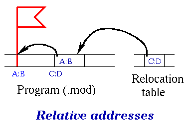
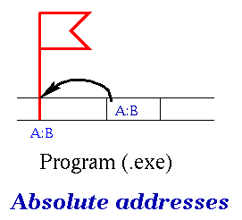

| OLD NEWS |
A few words on the testing. As usual, the tests are run under Windows NT; those that fail are run under Windows 95 and MS DOS. Only the best test runs are considered. If you are curious, check out the tests and see for yourself.
The average score is approximately 65, including non-working projects, and around 84 among the working projects (that is, projects that show some life). If you have any suggestions, complaints, or questions, feel free to ask me.
#pragma warn to disable warnings,
please restrict its effect on one piece of code at a time (at most,
one function definition) and reenable it after that (or restore the
previous state). If you use -w compiler option,
you are only allowed to enable warnings.
| Before relocation: | After relocation: |
|  |  |
A in the program there is an
entry B in the relocation table that points to A. These
pointers are stored as unsigned longs (only the 20 minor bits are
used). Now we can calculate the absolute addresses from the relative
addresses (stored in the program before relocation). First, we
calculate the starting address of the segment where we load the
program (referred to as startseg in the specs). Then, add
to it the relative address (pointed to by an entry in the relocation
table), getting the absolute address. Finally, repeat this for all
entries of the relocation table.
In the example below, we assume the header was declared
as unsigned[]; its contents is described in the specs.
Notice that we update ("patch") both the address used in the program
and the pointer to that address (stored in the relocation table),
since both of them are relative before relocation.
unsigned **entry; /* pointer to an entry in the relocation table */
unsigned *seg; /* segment portion of the address to be patched */
int i;
entry = (unsigned**)( (char*)header + header[12] ); /* 1st entry */
for ( i = 0; i < header [3]; ++i ) {
seg = MK_FP( FP_SEG(*entry) +startseg,
FP_OFF(*entry) );
*seg += startseg;
++entry;
}
readme file. Whatever object files, executables, etc. may
be on the diskette are ignored. Also, you do not have to put them in a
special subdirectory on the diskette (as the specs suggest); I assume
you have the project in the root directory. This is not important,
anyway; just let me know where you keep the files, if you think there
may be a confusion.
proc.c and
the project recompiled. (If you have different header file names, replace
the included file names.)
test1.c, test2.c,
test3.c, test3a.c,
test4.c, test5.c,
test6.c, test6a.c,
test7.c, test7a.c.
The following batch file does a selected test (including recompilation
and running): do.bat.
System_service interrupt handler. If you have an old Borland
package (versions later than 4), the correct prototype is
void interrupt System_service
(sbp,sdi,ssi,sds,ses,sdx,scx,sbx,sax,
sip,scs,sflags,sds2,sbp2,sip2,scs2,proc,argc,argv)
/* Access to system service routines. Service type is
to be passed in the AX register */
unsigned int sbp,sdi,ssi,sds,ses,sdx,scx,sbx,sax,sip,scs,sflags,
sds2,sbp2,sip2,scs2,argc ;
void interrupt System_service
(sbp,sdi,ssi,sds,ses,sdx,scx,sbx,sax,
sip,scs,sflags,sbp2,sip2,scs2,proc,argc,argv)
/* Access to system service routines. Service type is
to be passed in the AX register */
unsigned int sbp,sdi,ssi,sds,ses,sdx,scx,sbx,sax,sip,scs,sflags,
sbp2,sip2,scs2,argc ;